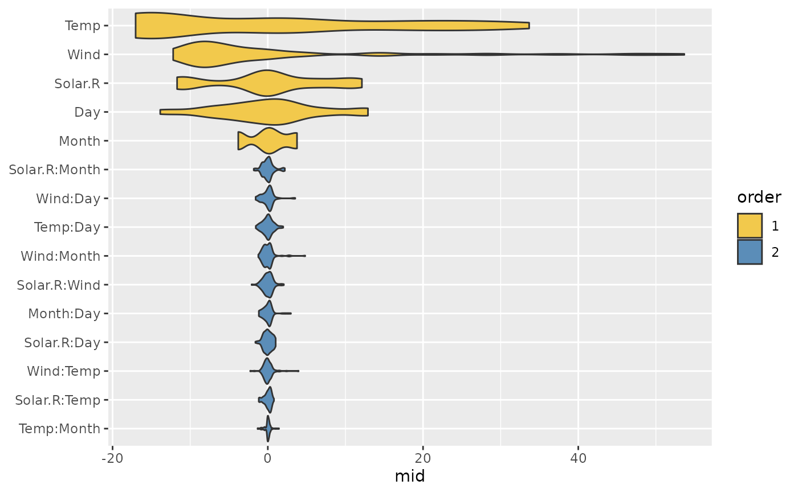
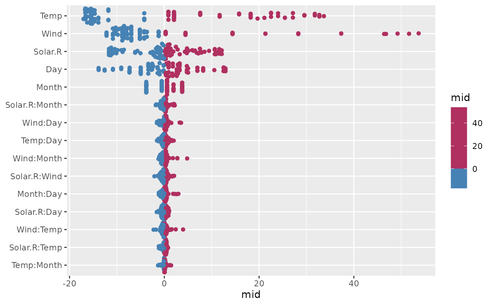
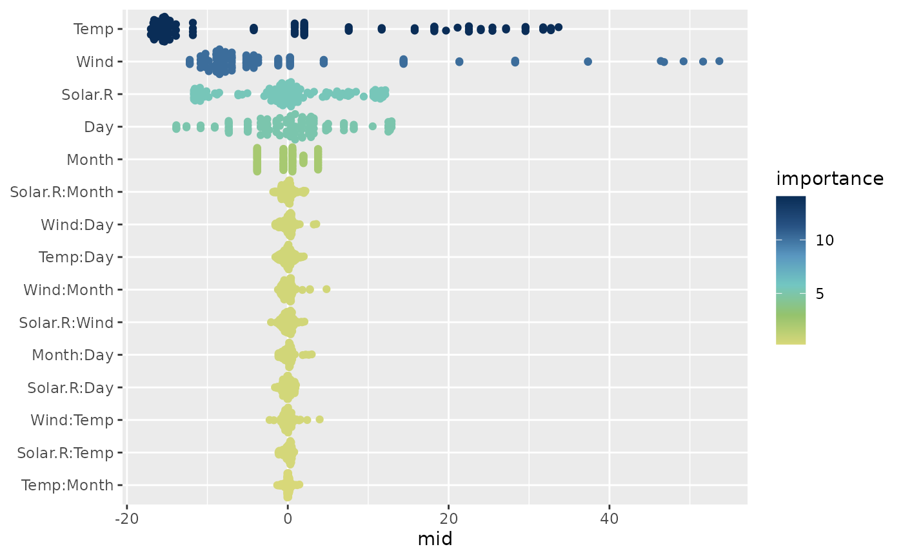

The midnight package extends midr::ggmid() to provide modern distribution plots for MID feature importance.
Added types include sina, beeswarm, and violin plots.
Usage
# S3 method for class 'midimp'
ggmid(object, type = NULL, theme = NULL, terms = NULL, max.nterms = 30, ...)Arguments
- object
a "midimp" object to be visualized.
- type
the plotting style. In addition to standard types ("barplot", "boxplot", "dotchart", "heatmap"), this extended method supports "violinplot", "sinaplot", and "beeswarm".
- theme
a character string or object defining the color theme. See
color.themefor details.- terms
an optional character vector specifying which terms to display.
- max.nterms
an integer specifying the maximum number of terms to display. Defaults to 30.
- ...
optional parameters passed on to the layers.
Details
This is an S3 method for the midr::ggmid() generic for "midimp" objects created by midr::mid.importance().
This method replaces the primary layer with modern distribution geoms when type is one of the extended options.
Note
This S3 method is NOT registered automatically when the midnight package is loaded, and activated when nightfall() is explicitly called.
Examples
library(midr)
library(midnight)
mid <- interpret(Ozone ~ .^2, airquality, lambda = .5)
#> 'model' not passed: response variable in 'data' is used
imp <- mid.importance(mid)
# Activate the richer S3 method
old <- nightfall()
# Create a violin plot
ggmid(imp, type = "violinplot", theme = "moon")

# Sina and Beeswarm plots require additional packages
if (requireNamespace("ggforce", quietly = TRUE)) {
ggmid(imp, type = "sinaplot", theme = "bicolor")
}

if (requireNamespace("ggbeeswarm", quietly = TRUE)) {
ggmid(imp, type = "beeswarm", theme = "Hokusai3")
}

# Restore the options
daybreak()
options(old)